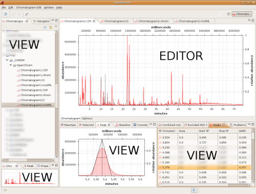
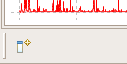

Views and Editors
OpenChrom makes use of views and editors. Editors are basically shown in the main part of the application.
Views show different aspects of the chromatogram selection made in the editor. Editors and views can be mini- and maximized.
Furthermore, editors and views can be rearranged in different combinations.
Views and Editors:

Views can be restored/shown using the view button on the lower left part of the software.
Restore views:
